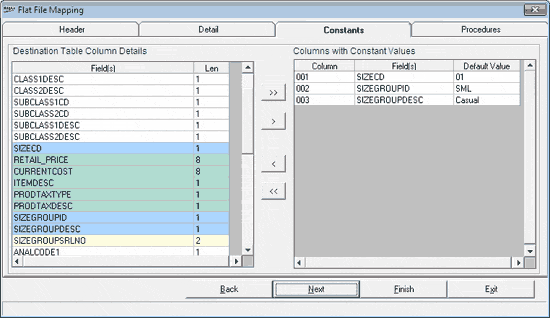

The Constants tab is as shown.

Destination Table Column Details: Displays the list of columns present in the selected destination table. The columns that are mapped to the values in the flat file are shaded with a green colour.
Columns with Constant Values: Select the destination table columns that are to be filled with constant values. Use the buttons between the two lists to move the columns in or out of this list. Specify the corresponding Default Value.
The columns that are to be filled with constant values are shaded with a blue colour.